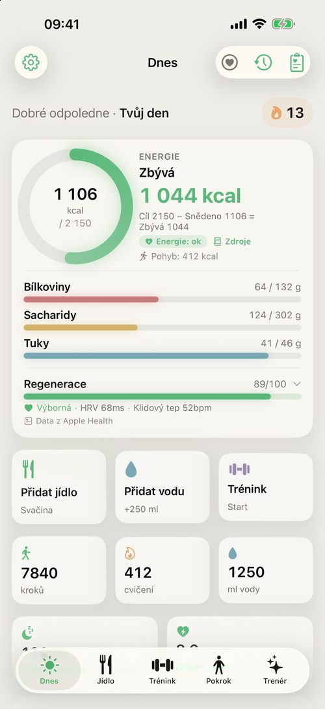
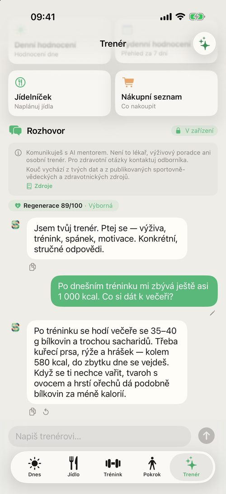

Verze 1.1 · říjen 2026
Subten je určen pro osoby starší 18 let.
Vítejte v uživatelské příručce aplikace Subten — kouče pro rekompozici těla pro iPhone a Apple Watch. Subten kombinuje zapisování jídla (AI skenování z fotky, čárové kódy, vyhledávání), kalorické a makro cíle z vašeho profilu se sledováním trendu váhy, tréninkový modul, hlubokou integraci s Apple Health a AI mentora.
Příručka pokrývá celou aplikaci: od vytvoření účtu a úvodního dotazníku přes všechny záložky a funkce až po předplatné, soukromí a řešení potíží. Je to průvodce typu jak na to: u každé funkce najdete, k čemu slouží, jak ji krok za krokem ovládat a co vám aplikace zobrazuje a proč.
Žádné předchozí znalosti výživy nejsou potřeba. Kdekoli se aplikace opírá o nějaký koncept (kalorický deficit, makroživiny, energetická dostupnost, trend váhy), příručka jej stručně a srozumitelně vysvětlí.
Příručku můžete číst dvěma způsoby:
| Část | Obsah |
|---|---|
| I — Seznámení se Subtenem | Co je Subten, klíčové koncepty (energetický model, cíle a kalibrace, Free vs. Premium), mapa obrazovek. |
| II — Začínáme | Vytvoření účtu, možnosti přihlášení, 6krokový úvodní dotazník, nastavení prvního dne. |
| III — Pět záložek | Jedna kapitola na každou záložku: Dnes, Jídlo, Trénink, Pokrok, Trenér. |
| IV — Cíle a trend váhy | Jak Subten nastavuje vaše kalorické a makro cíle, kalibrace, čas do cíle a vestavěné strategie (Cheat day, Refeed den, Dietní pauza, Plateau). |
| V — Apple Watch a zkratky | Aplikace pro hodinky, komplikace, akční tlačítko a zkratky Siri. |
| VI — Apple Health | Co Subten čte a zapisuje, přepínače podle typu dat, zdravotní upozornění. |
| VII — Premium a předplatné | Free vs. Premium, předplatné a zkušební období v App Store, obnovení nákupů. |
| VIII — Nastavení, soukromí a účet | Profil, připomínky, export/import dat, souhlas s AI, smazání účtu. |
| IX — Řešení potíží a FAQ | Běžné problémy a jejich řešení. |
| Příloha | Slovníček pojmů. |
Kapitoly o obrazovkách (část III) začínají oddílem K čemu slouží a pak popisují obrazovku, její funkce a podle potřeby časté chyby a omezení.
Neproporcionální písmo označuje něco, co píšete.Poznámka: Rozhraní Subtenu je k dispozici v šesti jazycích: češtině, slovenštině, angličtině, němčině, polštině a maďarštině. Tato příručka používá české rozhraní; slovenská a anglická verze příručky používají odpovídající lokalizované popisky. Uživatelé s německým, polským nebo maďarským rozhraním dostanou anglickou verzi příručky.
Subten je aplikace pro iOS (s doprovodnou aplikací pro Apple Watch) zaměřená na rekompozici těla — spalování tuku, budování svalů, nebo obojí. Její slogan: „Jídlo, trénink a regenerace na jednom místě.“ Pod tím se skrývá promyšlený engine:
Subten je určen dospělým: aplikace při úvodním nastavení vynucuje věkovou hranici 18+.
Subten používá na všech obrazovkách jediný, záměrně jednoduchý energetický vzorec:
Zbývá = Denní cíl − Snědeno
Váš denní cíl už zahrnuje plánovanou aktivitu. Na rozdíl od mnoha kalorických aplikací cvičení nenavyšuje váš zbývající rozpočet: trénink vám ve výchozím nastavení „nevydělá“ jídlo navíc. Aktivita z Apple Health se zobrazuje jen pro informaci. Pouze když váš naměřený pohyb zřetelně převýší plán, aplikace denní cíl rozšíří a zobrazí jej jako Cíl + Pohyb navíc. Tím se předchází klasické pasti dvojího započítání, kdy optimistické odhady spálených kalorií vymažou váš deficit.
Vaše denní cíle vycházejí ze standardního odhadu: rovnice Mifflin–St Jeor vynásobená aktivitním násobitelem a upravená podle vašeho cíle a tempa. Takový odhad je jen přibližný; skutečný vývoj ukáže trend vaší váhy, který Subten počítá z vážení a jednorázové výkyvy přitom odfiltruje. Zhruba první dva týdny, dokud nemáte dost zapsaných dnů a vážení, záložka Dnes zobrazuje kalibrační banner. V této verzi se cíle samy nepřepočítávají — když se vaše váha výrazně změní, aktualizujte ji v Nastavení → Profil a cíle. Pravidla a bezpečnostní pojistky podrobně vysvětluje část IV.
Váš tréninkový plán řídí vaše výživové cíle (tréninkové dny mohou mít jiné cíle než dny odpočinkové — viz typy dnů níže). To, co Apple Health naměří, slouží ke kontrole reality vůči plánu, ne k jeho přepisování minutu po minutě.
Každý den má svůj typ — Síla, Kardio, Odpočinek nebo Vlastní — zobrazený jako štítek na záložce Jídlo. Typy dnů umožňují carb cycling: denní cíl se může podle typu dne lišit. Speciální dny nastavené strategiemi a režimy (cheat day, refeed, plateau protokol, nemoc, dovolená) se spolu s několika dny po nich nezapočítávají do rozpoznání plateau, aby například jeden plánovaný „vysoký“ den nezkreslil trend.
Základní smyčka je zdarma: zapisování jídla vyhledáváním, čárovým kódem a ručně, záložka Dnes, tréninková záložka Můj plán, sledování pokroku, synchronizace s Apple Health, připomínky a export/import dat. Premium odemyká AI funkce (skenování fotek, skenování etiket, jídelníčky, AI mentora na záložce Trenér) a plný tréninkový modul (Posilovna, Sport). Úplné srovnání najdete v kapitole 12.1.
Aplikace má pět záložek:
| Záložka | K čemu slouží |
|---|---|
| Dnes | Váš den na jeden pohled: energetický kruh, rychlé akce, kroky, voda, spánek a regenerace, dnešní trénink a jídla. |
| Jídlo | Jídelníček: zapisování, úpravy a plánování jídel; AI jídelníček a nákupní seznam. |
| Trénink | Váš tréninkový plán, knihovna cviků, aktivní trénink s odpočinkovým časovačem, osobní rekordy. |
| Pokrok | Graf váhy a trendu, složení těla, tělesné míry, série vážení, Foto pokrok. |
| Trenér | AI mentor: chat, denní a týdenní přehledy, jídelníček, nákupní seznam. |
Do Nastavení se dostanete přes ikonu ozubeného kola na záložce Dnes.

Tato část vás provede od instalace aplikace k prvnímu plně nastavenému dni.
Při prvním spuštění Subten zobrazí přihlašovací obrazovku. Účet můžete vytvořit třemi způsoby:
| Způsob | Poznámky |
|---|---|
| E-mail + heslo | Klasická registrace; e-mail potvrdíte. |
| Přihlásit se přes Apple | Nejrychlejší na iPhonu; svůj skutečný e-mail můžete skrýt. |
| Pokračovat s Google | Používá váš účet Google. |
Než se přihlásíte nebo zaregistrujete jakýmkoli způsobem (Apple, Google i e-mail), musíte zaškrtnout souhlas s Podmínkami používání a Zásadami ochrany soukromí.
Zapomněli jste heslo? Klepněte na Zapomněl jsem heslo?, zadejte svůj e-mail a klikněte na odkaz ve zprávě pro obnovení — otevře aplikaci přímo na obrazovce pro nové heslo.
Úvodní nastavení je 6krokový dotazník s ukazatelem postupu (Krok X / 6). Od kroku 3 se můžete vrátit tlačítkem Zpět; krok 5 lze přeskočit.
Upozornění: Subten je pouze pro dospělé. Výběr data narození nepřijme datum, podle kterého by vám bylo méně než 18 let.
Krok 1 — Vítejte. Aplikace se představí. Zobrazí se i tip pro iPhone 15 Pro a novější: Akční tlačítko můžete přiřadit zkratce Přidat jídlo (menu jídla) nebo Naskenovat jídlo (fotoaparát); tlačítko Otevřít Nastavení vás přenese do nastavení iOS.
Krok 2 — Profil. Zvolte pohlaví, nastavte datum narození, výšku (120–220 cm), aktuální váhu a cílovou váhu (obě 35–200 kg). Z těchto údajů vychází počáteční kalorický odhad.
Krok 3 — Úroveň aktivity. Vyberte z možností Sedavý, Lehká aktivita, Střední aktivita, Aktivní, Velmi aktivní — každá karta vysvětluje, co to znamená v počtu tréninků týdně. Volte upřímně — z úrovně aktivity vychází denní cíl; později ji změníte v Nastavení → Profil a cíle.
Krok 4 — Cíl. Zvolte Spalovat tuk, Budovat svaly, Rekompozice nebo Udržovat.
Živá náhledová karta ukazuje vaše výchozí cíle: denní kcal, bílkoviny/sacharidy/tuky, váš BMR a TDEE a u cíle s deficitem také deficit a odhadovaný čas do cíle (ETA). Ve spodní části karty jsou uvedeny publikované vzorce, ze kterých výpočet vychází.
Krok 5 — Tréninkový plán (volitelný). Vyberte tréninkový split: Full Body 3×, Upper/Lower 4×, Bro Split 5× nebo Push/Pull/Legs 6×. Plán můžete později změnit nebo si na záložce Trénink sestavit vlastní.
Krok 6 — Apple Health. Subten vysvětlí, o přístup k jakým údajům požádá (váha, kroky, tep srdce, spánek, tréninky, energie a voda a také HRV, VO₂ max, okysličení krve, dechová frekvence a teplota zápěstí). Klepněte na Pokračovat. Otevře se systémový dialog iOS, ve kterém přístup povolíte nebo zamítnete. Poté se profil uloží a otevře se záložka Dnes. Synchronizaci můžete později zapnout nebo vypnout v Nastavení → Zdraví v Subtenu a jednotlivá oprávnění změnit v systémovém nastavení iOS (Zdraví → Subten).
Záložka Dnes je vaše domovská obrazovka: jediný pohled vám řekne, jak den probíhá — energetický rozpočet, aktivita, voda, regenerace, plánovaný trénink a zapsaná jídla. Zároveň je odrazovým můstkem pro nejčastější akce.
Odshora dolů (karty se zobrazují, jen když jsou relevantní):


Poznámka — Apple Watch není potřeba. Skóre regenerace i všechny zdravotní metriky (HRV, tepová frekvence, spánek, SpO₂…) Subten čte z Apple Health, ne přímo z hodinek. Zdrojem může být cokoli, co tato data do Apple Health zapisuje — Apple Watch, Garmin, Oura, Whoop, jiné náramky či prsteny, nebo i samotný iPhone (kroky, spánek). Pokud v Apple Health žádná taková data nejsou, panel Regenerace ukáže –/100, krátké vysvětlení a tlačítko Propojit Apple Health (nebo Otevřít Nastavení).
Záložka Jídlo je váš jídelníček: vše, co jíte a pijete, uspořádané podle jídel (snídaně, dopolední svačina, oběd, svačina, večeře), s denními součty vůči vašim cílům — včetně vlákniny.

| Způsob | Jak | Dostupnost |
|---|---|---|
| Vyhledávání | Napište název, vyberte výsledek, nastavte množství. Přílohy lze přidat ve stejném kroku. | Free |
| AI odhad výživy | Ve vyhledávání popište jídlo vlastními slovy (např. „kuřecí prsa 150g“); AI okamžitě odhadne kalorie a makra, která před přidáním zkontrolujete. | Premium |
| Čárový kód | Namiřte fotoaparát na čárový kód; produkt se načte z databáze Open Food Facts. | Free |
| AI sken z fotky | Vyfoťte svůj talíř (nebo vyberte z galerie); AI jídlo rozpozná a doplní makra, která zkontrolujete a potvrdíte. | Premium |
| Sken nutriční etikety | Vyfoťte etiketu; AI přečte hodnoty. | Premium |
| Recepty | Vytvořte a uložte vícesložkové recepty (Vytvořit recept) a zapisujte jejich porce. | Free |
| Skenovat recept z fotky | Vyfoťte kuchařskou knihu, screenshot webu nebo ručně psaný recept; AI vyplní název, ingredience, postup a odhadne makra. | Premium |
| Rychlé přidání | Napište název a hodnoty Na 100 g (kalorie, bílkoviny, sacharidy, tuky, vláknina), pak v části Porce hmotnost, kterou jste snědli. Do deníku se zapíše přepočet (řádek Celkem). | Free |
| Oblíbené / Nedávné / Časté | Opakovaný zápis často používaných potravin jedním klepnutím (uložíte ikonou srdce). | Free |
Tip: Skeny z fotky fungují i offline — zařadí se do fronty a zpracují se, jakmile budete zase online. Banner ukazuje čekající a neúspěšné skeny; klepnutím na něj otevřete frontu skenů.
Tip pro nejlepší výsledek: Skener nemá režimy k přepínání — čárový kód rozpozná sám, když na něj namíříte, a po vyfocení AI sama pozná, zda je na fotce jídlo, nebo etiketa (řádek Čárový kód · Etiketa · Jídlo pod spouští je jen nápověda). Pokud se produkt nenajde podle čárového kódu (okno Produkt nebyl nalezen), namiřte fotoaparát na výživovou tabulku (hodnoty na 100 g nebo na porci) a klepněte na Vyfotit obal (Premium). AI z ní přečte makra a doplní je za vás — spolehlivěji než odhad z fotky talíře. Tlačítko Přidat ručně otevře Rychlé přidání s již vyplněným čárovým kódem.


Klepnutím na řádek potraviny otevřete úpravy: změňte gramáž krokovačem po ±10 g nebo předvolbami (50/100/150/200/300 g), případně makra zcela přepište. Ikony přímo na řádku potravinu uloží do oblíbených (srdce), přesunou do jiného jídla (šipky) nebo smažou (koš, s potvrzením). Podržením prstu na řádku otevřete nabídku Zkopírovat do dneška a Zobrazit detail.
Panel nástrojů → Jídelníček po klepnutí na Vygenerovat vytvoří plán 5 jídel na celý den podle vašich aktuálních cílů. Do pole Preference (volitelné) můžete napsat např. „asijská kuchyně, bez mléka“. Jednotlivá jídla můžete Vyměnit nebo otevřít jejich Detail a uložit do receptů. Tlačítko Přidat plán do dne plán zapíše a Přidat do nákupu vytvoří Nákupní seznam s ingrediencemi.

Záložka Trénink obsahuje váš plán, vaše tréninky a historii. Má čtyři podzáložky: Můj plán, Posilovna, Sport a Knihovna.
Váš aktivní plán: banner pro pokračování v rozdělaném tréninku, pás týdne, dnešní trénink, sekce tréninků z Apple Watch, které můžete importovat, týdenní statistiky a historie tréninků. Tlačítkem + vlevo nahoře můžete Přidat aktivitu (ručně zapsat kardio) nebo Vytvořit plán.

Spuštěním tréninku se otevře živá obrazovka: cviky se sériemi a opakováními, odpočinkový časovač (±15 s nebo Přeskočit) a Live Activity na zamčené obrazovce a v Dynamic Islandu s tlačítky Série hotová a Přeskočit přestávku, takže trénink ovládáte bez odemykání telefonu. Přestávky mezi sériemi můžete vypnout nebo jim nastavit délku v Nastavení → Trénink (Přestávky mezi sériemi, Délka přestávky; výchozí je Podle cviku). Dokončený trénink se uloží do historie a (pokud jste to povolili) do Apple Health; nové osobní rekordy se rozpoznávají automaticky.

Bez Premium se v těchto podzáložkách zobrazuje karta s nabídkou předplatného.
Knihovna cviků: filtrujte podle svalové skupiny, sledujte animované ukázky, čtěte pokyny k technice a vytvářejte vlastní cviky.

Poznámka: Tréninkový modul obsahuje upozornění ke cvičení — Subten poskytuje vedení, ne lékařskou radu. Přestaňte s jakýmkoli cvikem, který způsobuje bolest.
Záložka Pokrok sleduje výsledek: váhu, trend, složení těla, míry a fotky.

Záložka Trenér je váš AI mentor: chat, který zná vaše data, a čtyři dlaždice na jedno klepnutí. Vysvětluje, navrhuje a — s vaším potvrzením — jedná.
Poznámka: V souladu s nařízením EU o umělé inteligenci (EU AI Act) Trenér uvádí, že komunikujete s AI mentorem. Není to lékař, nutriční specialista ani trenér; se zdravotními obtížemi se obraťte na odborníka. Pod upozorněním je odkaz Zdroje (i v nabídce ✦ vpravo nahoře → Věda a zdroje) se seznamem sportovně-vědeckých a zdravotnických zdrojů, ze kterých Trenér vychází.


Textové funkce Trenéra (chat, denní hodnocení, týdenní hodnocení, analýza plateau) umí Subten zpracovat přímo na vašem iPhonu — bez odeslání do cloudu. Není to výchozí stav: model si musíte jednou zapnout a stáhnout (viz níže) a potřebujete Premium.
Jak to poznáte v chatu: když Trenér odpovídá modelem v telefonu, vpravo od nadpisu Rozhovor je odznak se zámkem a nápisem „V zařízení”. Když tento odznak není, odpovědi zpracovává cloud. Jednoduché pravidlo: zámek = v zařízení, bez zámku = cloud. (Výjimka: pokud lokální generování selže a Subten tiše přepne na cloud, odznak zůstává zobrazený.)
Lokální model je dostupný jen na iPhonech s 6 GB RAM a více; na iPhonech s 6 GB jsou odpovědi pomalejší. Na slabších zařízeních (méně než 6 GB) Trenér používá vždy cloud, sekce AI v telefonu se v Nastavení nezobrazí a odznak „V zařízení” se neukáže nikdy.
Aby fungovala AI v zařízení, potřebuje Subten jazykový model (přibližně 3,4 GB; přesnou velikost aplikace ukáže předem). Doučovací adaptér je součástí aplikace, ale základní model se nestáhne, dokud ho sami nezapnete:
Když je model zapnutý a připravený, Subten se rozhoduje automaticky — nemusíte nic přepínat. Lokální model se použije, když jsou splněny všechny tři podmínky zároveň:
Tehdy je u nadpisu Rozhovor odznak V zařízení a požadavek se nezpracovává v cloudu. Ve všech ostatních případech se použije cloud (OpenRouter API):
| Funkce | Kde běží |
|---|---|
| Chat (včetně zapisování jídla/aktivity), denní hodnocení, týdenní hodnocení, analýza plateau | Lokálně* |
| Skenování jídla z fotky, skenování etikety a receptu | Vždy cloud |
| AI jídelníček | Vždy cloud |
| AI odhad jídla z textu | Lokálně, pokud je zapnutý přepínač AI odhad jídla v telefonu (na iPhonech s 8 GB RAM výchozí); nepoužitelný výsledek převezme cloud. Jinak cloud. |
| Model není zapnutý nebo ještě není připravený | Cloud |
* Pokud lokální generování selže, Subten tiše přepne na cloud, abyste dostali odpověď (neplatí v Soukromém režimu).
V Nastavení → AI v telefonu najdete přepínač Soukromý režim: AI jen v zařízení. Zapnout ho lze, až když máte zapnutý Model AI v zařízení (vypnutím modelu se vypne i Soukromý režim). Běžné chování už tak upřednostňuje zařízení; tento přepínač navíc zakáže přepnutí na cloud pro chat a hodnocení Trenéra — pokud by lokální model nemohl odpovědět, raději zobrazí poctivou chybu, než by data poslal do cloudu. Když je model připravený, chat a hodnocení fungují i bez internetu.
I v soukromém režimu cloudové funkce zůstávají v cloudu: sken fotky jídla, etikety a receptu a AI jídelníček — ty bez cloudu jednoduše neběží. AI odhad jídla z textu běží v telefonu jen se zapnutým přepínačem AI odhad jídla v telefonu; nepoužitelný výsledek i tehdy převezme cloud. Vaše fotky pokroku se neodesílají nám ani AI, v žádném režimu.
Trenér je funkce Premium. Bez Premium záložku otevřete, ale po odeslání zprávy se v chatu zobrazí karta AI trenér je součástí Premium s tlačítkem Odemknout Premium; denní a týdenní hodnocení místo AI textu oznámí, že AI funkce jsou součástí Premium.
Tato kapitola uživatelsky vysvětluje, jak Subten nastavuje váš denní cíl a jak pracuje s trendem vaší váhy.
Dokud za poslední 3 týdny nemáte alespoň 3 vážení (první z nich alespoň 14 dní staré) a alespoň 10 dní se zapsaným jídlem, záložka Dnes zobrazuje banner Kalibrujeme tvé cíle (lze ho zavřít). Výchozí cíle jsou záměrně konzervativní.
Denní cíl kalorií a maker vypočítá Subten z vašeho profilu — při úvodním nastavení a znovu vždy, když v Nastavení → Profil a cíle změníte například váhu, cíl, tempo nebo aktivitu (se zapnutým přepínačem Auto) a klepnete na Uložit změny. Ze zapsaného jídla a vážení se cíl v této verzi sám nepřepočítává — když se vaše váha výrazně změní, aktualizujte ji v profilu. Bezpečnostní pojistky:
Odhad času do cíle najdete na záložce Pokrok v hlavní kartě Aktuální váha. Přepočítává se z naměřeného trendu vážení za posledních 14 dní a může ukazovat Ještě X vážení za 14 dní a ukážu odhad cíle, Važ se dál — odhad cíle za X dní, Sbíráme data…, Zatím bez jasného trendu, Cíl dosažen nebo datum (Cíl ~…). Pokud by aktuální trend znamenal déle než zhruba dva roky, aplikace odhad zastropuje na dva roky, místo aby zobrazovala fikci.
Nastavení → Pokročilé → Životní situace a strategie (nebo ikona srdce vpravo nahoře na záložce Dnes) otevře obrazovku Životní situace. Nahoře jsou dočasné režimy Jsem nemocný, Cheat day a Dovolená (aktivní může být jen jeden najednou), pod nimi Pokročilé strategie:
| Strategie | Co dělá |
|---|---|
| Cheat day | Plánovaný den s vyšším příjmem (počet extra kcal si nastavíte); tento den a několik dní po něm se nezapočítávají do rozpoznání plateau. |
| Refeed den | Plánovaný den s vyšším příjmem sacharidů, užitečný v dlouhých fázích kalorického deficitu. |
| Dietní pauza | 7–14 dní na udržovacím příjmu (TDEE). |
| Plateau | Rozpozná stagnaci váhy 14+ dní a nabídne Plateau protokol s doporučenými kroky (refeed, dietní pauza nebo úprava deficitu). |
| Jsem nemocný / Dovolená | Dočasné režimy (odpočinek s pozastaveným tréninkem / vyšší příjem, volnější režim); tyto dny a několik dní po nich se nezapočítávají do rozpoznání plateau. |
Používání vestavěných strategií a režimů (místo nahodilých dnů mimo plán) udržuje vaše data přehledná a rozpoznání plateau spolehlivější.
Aplikace Subten pro Apple Watch je volitelný doplněk — pohodlný pohled na den přímo na zápěstí (kruhy, voda, komplikace). Není podmínkou používání Subtenu: zdravotní data (regeneraci, spánek, tepovou frekvenci…) čte Subten z Apple Health nezávisle na ní, takže do Apple Health mohou přispívat i hodinky jiné značky nebo jiný nositelný senzor (viz kapitola 11).
Domovská obrazovka na hodinkách zrcadlí váš den:

Na ciferník hodinek si můžete přidat tři komplikace Subten: Kalorie (zbývající kalorie), Regenerace (skóre 0–100) a Voda. Na ploše iPhonu jsou widgety Dnešní kalorie, Kalorie + makra, Pokrok postavy a Pokrok postavy +; na zamčené obrazovce Kalorie a Kalorie (řádek).
Na iPhonu 15 Pro a novějších můžete akční tlačítko (Action Button) namapovat na akci Subtenu Přidat jídlo nebo Naskenovat jídlo. Stejné akce fungují se Siri a v aplikaci Zkratky; hodinky přidávají akci Log water (zapíše vodu bez otevření aplikace).
Subten požádá o přístup ke Zdraví v kroku 6 úvodního nastavení systémovým dialogem iOS, kde jej povolíte nebo zamítnete; později jej ovládáte v Nastavení → Zdraví, každý typ dat samostatně.
Subten čte to, co je v Apple Health, bez ohledu na to, které zařízení tam data zapsalo. Apple Watch není podmínka — stačí cokoli, co do Apple Health přispívá: Apple Watch, Garmin, Oura, Whoop, jiné náramky a prsteny, nebo samotný iPhone (kroky, spánek). Čím více dat v Apple Health máte, tím více podkladů mají regenerace a doporučení; bez nich Subten funguje dál, jen tyto funkce zůstanou prázdné.
| Data | Směr |
|---|---|
| Váha | čtení i zápis |
| Tréninky | čtení i zápis (silový trénink dokončený v Subtenu se při zapnuté synchronizaci tréninků uloží do Apple Health) |
| Kroky, aktivní energie, spánek, voda, přijaté kalorie, tělesný tuk, VO₂ max | čtení |
| HRV, klidová tepová frekvence | čtení (skóre regenerace, spolu se spánkem) |
| SpO₂, dechová frekvence, teplota zápěstí | čtení (noční měření v detailu regenerace, zdravotní upozornění) |
Zdravotní upozornění: když data vykazují anomálie (neobvyklé SpO₂, dechovou frekvenci, tep, HRV, teplotu nebo spánek), Subten zobrazí banner na záložce Dnes. Jde o informativní upozornění, ne o diagnózy.
Tip: Pokud čísla vypadají zdvojeně (např. trénink započítaný dvakrát), zkontrolujte, že tréninky zapisuje jen jedna aplikace, nebo vypněte synchronizaci daného typu v Nastavení → Zdraví → Synchronizace podle typu.
| Funkce | Free | Premium |
|---|---|---|
| Zapisování jídla: vyhledávání, čárový kód, ručně, recepty, oblíbené | ✓ | ✓ |
| Dnes, Pokrok, série | ✓ | ✓ |
| Trénink — Můj plán, Knihovna, osobní rekordy | ✓ | ✓ |
| Synchronizace s Apple Health, připomínky, aplikace pro hodinky | ✓ | ✓ |
| Export a import dat | ✓ | ✓ |
| AI skenování fotek jídla, etiket a receptů; AI odhad jídla z textu | — | ✓ |
| AI jídelníčky a nákupní seznam | — | ✓ |
| AI trenér — záložka Trenér (chat, denní a týdenní shrnutí) | — | ✓ |
| Trénink — Posilovna a Sport (sportovní plány) | — | ✓ |
| Synchronizace přes iCloud | ✓ | ✓ |
Nabídka předplatného obsahuje měsíční a roční plán (roční je označen jako Nejvýhodnější s rozpisem ceny na měsíc). Nákupy probíhají přes vaše Apple ID; předplatné se automaticky obnovuje, dokud jej nejpozději 24 hodin před koncem období nezrušíte v iOS: Nastavení → [vaše jméno] → Předplatné. Obnovit nákupy obnoví existující předplatné na novém zařízení.
Zkušební období nabízí App Store jako úvodní nabídku k předplatnému: u měsíčního plánu 1 týden, u ročního 2 týdny. Nárok na něj máte jen u prvního předplatného Premium na vašem Apple ID — o nároku rozhoduje App Store a přesné podmínky zobrazí jeho okno ještě před potvrzením nákupu. Během zkušebního období se vám nic neúčtuje; pokud předplatné nezrušíte nejpozději 24 hodin před jeho koncem, automaticky se změní na placené.
Aplikace sama žádnou zkušební verzi nespouští — po úvodním nastavení používáte bezplatnou verzi. Když Premium skončí, AI funkce a podzáložky Posilovna a Sport se opět zamknou. K vašim datům nikdy nepřijdete: zapisování, pokrok a export fungují i bez Premium.
Nastavení otevřete ozubeným kolem na záložce Dnes.
| Sekce | Co v ní najdete |
|---|---|
| Upravit profil → Profil a cíle | Pohlaví, výška, aktuální a cílová váha, úroveň aktivity, cíl, tempo, tréninkové zkušenosti a Denní cíle (Auto nebo ručně) — cíle se přepočítají. |
| Předplatné | Stav Premium a aktivace (obrazovka předplatného s tlačítkem Obnovit nákupy). |
| AI v telefonu | Jen na iPhonech s 6 GB RAM a více (§8.3): Model AI v zařízení (jednorázové stažení přes Wi‑Fi, součást Premium), Soukromý režim: AI jen v zařízení a AI odhad jídla v telefonu. |
| Trénink | Přestávky mezi sériemi (zapnout/vypnout) a Délka přestávky — Podle cviku nebo 15–300 s. |
| Připomínky | Snídaně, oběd, večeře, voda, trénink, vážení — každá s vlastním časem. |
| Zdraví | Hlavní přepínač plus přepínače synchronizace podle typu. |
| Jednotky | kg / lbs (zobrazení a zadávání; váha se vždy ukládá v kg). |
| Jazyk | Systémový jazyk nebo jeden ze šesti jazyků: English, Slovenčina, Čeština, Deutsch, Polski, Magyar (vyžaduje restart). Příručka je slovensky, česky a anglicky; při němčině, polštině a maďarštině se otevře anglická. |
| Miniatury potravin | Emoji a ikony u jídel a na kartě skenu (přepínač). |
| Pokročilé | Životní situace a strategie; Export a import vašich dat. |
| Zpětná vazba | Odeslání zpětné vazby vývojáři. |
| Účet | Odhlášení; Smazat účet a data. |
| AI v Subtenu | Co dělají AI funkce, přepínač Sdílení dat s AI, Zásady ochrany soukromí, Věda a zdroje a prohlášení. |
| O aplikaci | Verze, Uživatelská příručka, Věda a zdroje, Poděkování a licence. |
Banner hlásí „Databáze potravin se nepodařilo načíst.“ Klepněte na Zkusit znovu. Pokud potíž přetrvává, aplikaci vynuceně ukončete a znovu otevřete.
Můj sken z fotky visí ve stavu „čeká“. Skeny se offline řadí do fronty a zpracují se automaticky, jakmile budete online. Frontu skenů otevřete z banneru a neúspěšné položky zopakujte.
Na obrazovce předplatného se nenačítají ceny. Cena nedostupná, zkus později znamená, že App Store neodpověděl — klepněte na Zkusit znovu a zkontrolujte připojení.
Moje cíle se týdny nezměnily. To je v pořádku: v této verzi se denní cíl sám nepřepočítává (§9.2). Když se vaše váha výrazně změní, aktualizujte ji v Nastavení → Profil a cíle (se zapnutým Auto) a klepněte na Uložit změny.
Zbývá se při cvičení nezvyšuje. Je to záměr — viz energetický model (§2.2).
Kroky/váha se nesynchronizují. Zkontrolujte Nastavení → Zdraví: hlavní přepínač i přepínač daného typu. Pak zkontrolujte iOS Nastavení → Soukromí a zabezpečení → Zdraví → Subten.
Změnil(a) jsem jazyk, ale aplikace je namíchaná. Restartujte aplikaci — změna jazyka to vyžaduje.
Záložka Trenér zobrazuje jen kartu s odemknutím. AI trenér je součástí Premium; předplaťte si ho (zkušební období nabízí App Store, §12.3). Pokud Premium máte, klepněte na obrazovce předplatného na Obnovit nákupy.
Nemohu vybrat své datum narození. Subten je 18+; výběr data to vynucuje.
Smazání účtu selhalo. Potřebujete připojení k síti (musí se smazat i kopie na serveru). Zkuste to znovu online; pokud potíž přetrvává, kontaktujte podporu přes Nastavení → Zpětná vazba.
| Pojem | Význam |
|---|---|
| BMR | Bazální metabolismus — energie spálená v naprostém klidu. |
| TDEE | Celkový denní energetický výdej — BMR plus veškerá aktivita; váš skutečný udržovací příjem. |
| Deficit / nadbytek | Jíst pod / nad udržovacím příjmem — základ spalování tuku / nabírání svalů. |
| Makra | Bílkoviny, sacharidy, tuky (Subten sleduje i vlákninu). |
| Rekompozice | Spalování tuku a budování svalů ve stejném období. |
| Energetická dostupnost (EA) | Energie, která tělu zbývá po tréninku; chronicky nízká EA škodí zdraví i adaptaci. |
| Typ dne | Síla / Kardio / Odpočinek / Vlastní — řídí denní cíle (carb cycling). |
| Kalibrace | Prvních ~2 týdnů, než máte dost zapsaných dnů a vážení; záložka Dnes do té doby zobrazuje banner Kalibrujeme tvé cíle. |
| Refeed | Plánovaný den s vyšším příjmem sacharidů v rámci dietní fáze. |
| Dietní pauza | 7–14 dní na udržovacím příjmu (TDEE). |
| Série | Na záložce Dnes: počet po sobě jdoucích dnů, kdy jste zapsali aspoň jedno jídlo. Na záložce Pokrok: Série vážení — počet po sobě jdoucích týdnů s alespoň jedním vážením. |
| HRV | Variabilita srdeční frekvence — ukazatel regenerace čtený z Apple Health. |
| Live Activity | Widget na zamčené obrazovce iOS zobrazovaný během aktivního tréninku. |
Subten — Uživatelská příručka · v1.1 · © 2026